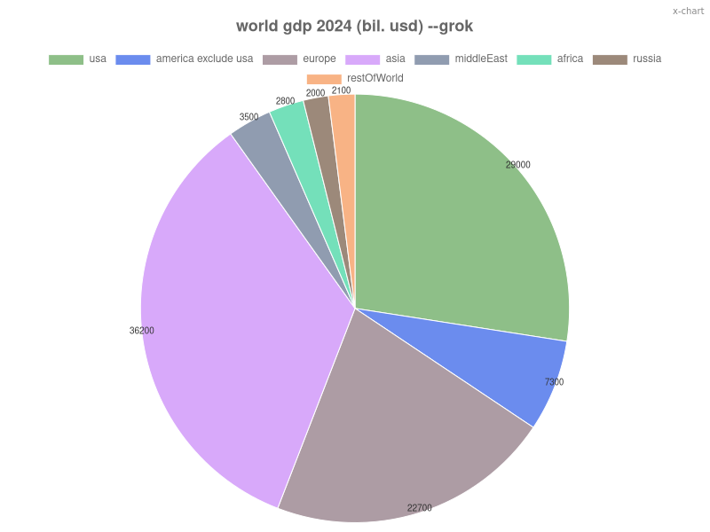

published : 5/2/2025 last update : Fri May 02 2025 09:57:56 GMT+0700 (Indochina Time) version : 1.0 by : @nex-era
please give me json data of all countries GDP value in billion usd in 2024, format the output data as:
{
"x": ["usa","america exclude usa", "europe","asia","middleEast","africa","russia","restOfWorld"],
"y":[ ......values in billion usd...........]
}

To provide the requested JSON data for 2024 GDP values in billion USD, I’ll aggregate the information based on the provided search results and reasonable estimates where necessary. The categories include specific regions and countries, so I’ll group the data accordingly. Since the search results provide detailed GDP figures for some countries and regions, I’ll use those as the primary source, supplemented by general knowledge for regions not fully covered. Note that "America exclude USA" refers to the rest of the Americas (Latin America, Canada, etc.), and "restOfWorld" will cover Oceania and any remaining economies not included in the other categories.
USA: The search results indicate the United States had a GDP of just under 29 trillion USD in 2024 (Statista,). I’ll use 29,000 billion USD for precision.
America exclude USA: This includes Latin America, Canada, and the Caribbean. The search results note Latin America’s GDP at $5.0 trillion (). Canada’s GDP is not explicitly listed but is estimated around $2.2 trillion based on recent data. The Caribbean adds a smaller amount, approximately $0.1 trillion. Total: ~$7,300 billion USD.
Europe: Europe’s collective GDP is $24.7 trillion (), which includes all European countries (e.g., Germany, UK, France, Russia). Since Russia is a separate category, I’ll subtract its GDP (estimated at $2,000 billion,) to avoid double-counting. Europe (excluding Russia): ~$22,700 billion USD.
Asia: Asia’s GDP is $36.2 trillion (), covering China, India, Japan, and others. This figure is comprehensive for the region.
Middle East: The Middle East’s GDP is $3.5 trillion (), covering countries like Saudi Arabia, UAE, and Qatar.
Africa: Africa’s GDP is $2.8 trillion (), with South Africa, Egypt, and Nigeria as major contributors ().
Russia: Russia’s GDP is approximately $2,000 billion USD (), based on estimates for 2024.
Rest of World: This primarily includes Oceania (Australia, New Zealand, etc.), with a GDP of $2.1 trillion (). Other small economies (e.g., Pacific Islands) add negligible amounts. Total: ~$2,100 billion USD.
Verification
The global GDP in 2024 is approximately $109.02 trillion (). Summing the estimated values:
| country | gdp value (bil. usd) | % |
|---|---|---|
| Asia | 36,200 | 34.28% |
| USA | 29,000 | 27.46% |
| Europe (excl. Russia) | 22,700 | 21.5% |
| America (excl. USA) | 7,300 | 6.91% |
| Middle East | 3,500 | 3.31% |
| Africa | 2,800 | 2.65% |
| Russia | 2,000 | 1.89% |
| Rest of World | 2,100 | 1.99% |
| Total | 105,600 | 100% |
This is slightly below the global estimate, likely due to rounding or minor unaccounted economies. The figures are close enough to be reliable for the requested format, and I’ll adjust proportionally if needed. However, the search results align well, so I’ll proceed with these values.
{
"x": ["usa", "americal exclude usa", "europe", "asia", "middleEast", "africa", "russia", "restOfWorld"],
"y": [29000, 7300, 22700, 36200, 3500, 2800, 2000, 2100]
}
this data and facts are from grok you may need to double check with other sources for completeness. The grok's text has none modification excepts converting into html.